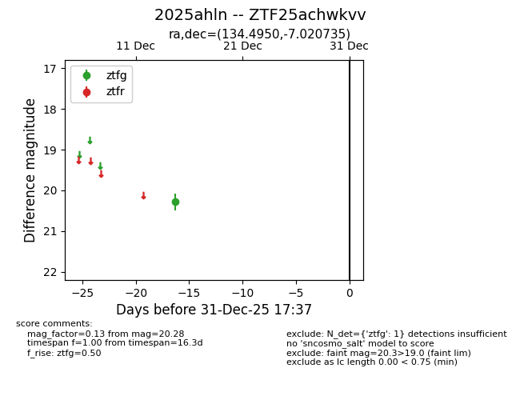
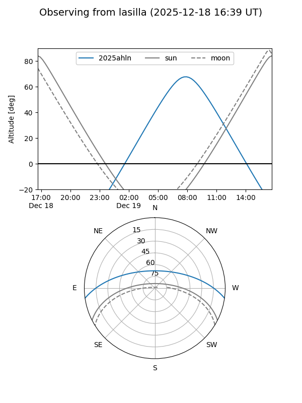
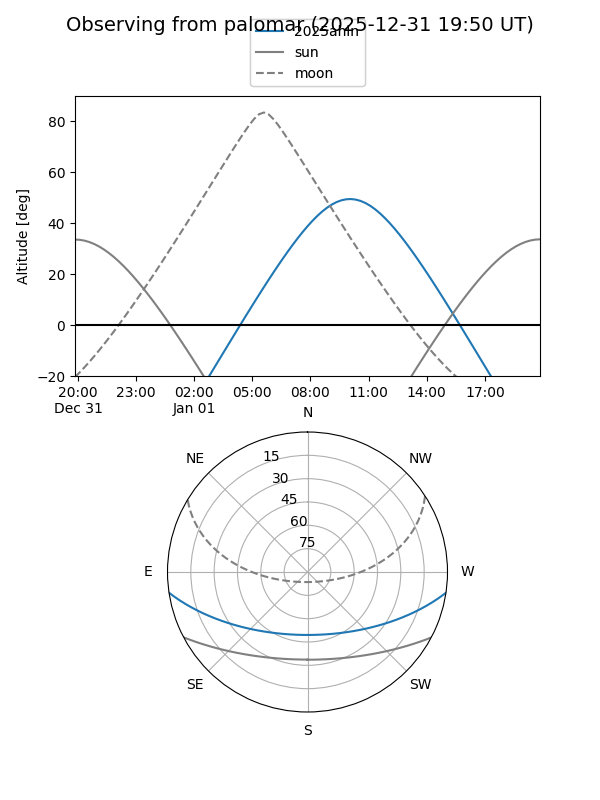

2025ahln
Target 2025ahln at 2026-01-09 12:49
Aliases and brokers:
FINK: link
Lasair: link
ALeRCE: link
TNS: link
YSE: link
alt names
ZTF25achwkvv (ztf,fink_ztf)
2025ahln (tns,yse)
Coordinates:
equatorial (ra, dec) = 134.4950,-7.02073
equatorial (HMS+DMS) = 08:57:58.80,-07:01:14.65
galactic (l, b) = (235.2082,+24.05269)
Flags:
Photometry:
last ztfg=20.28
1 ztfg detections
Lightcurve

Visibility


Additional plots